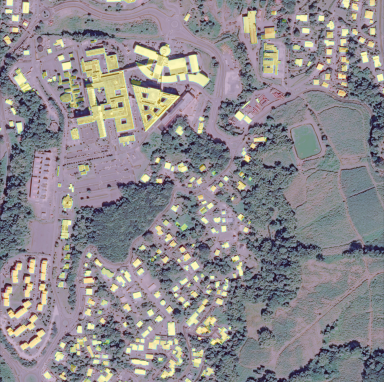
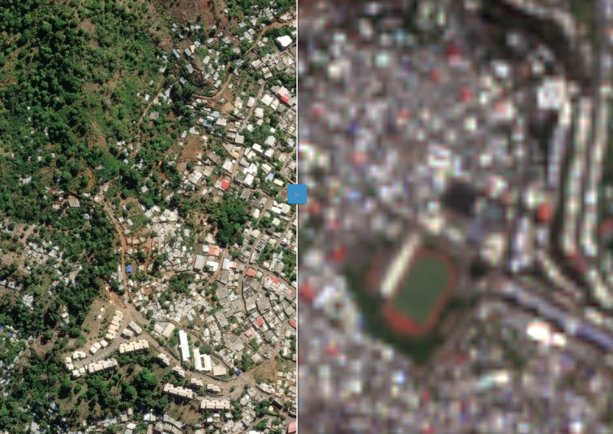
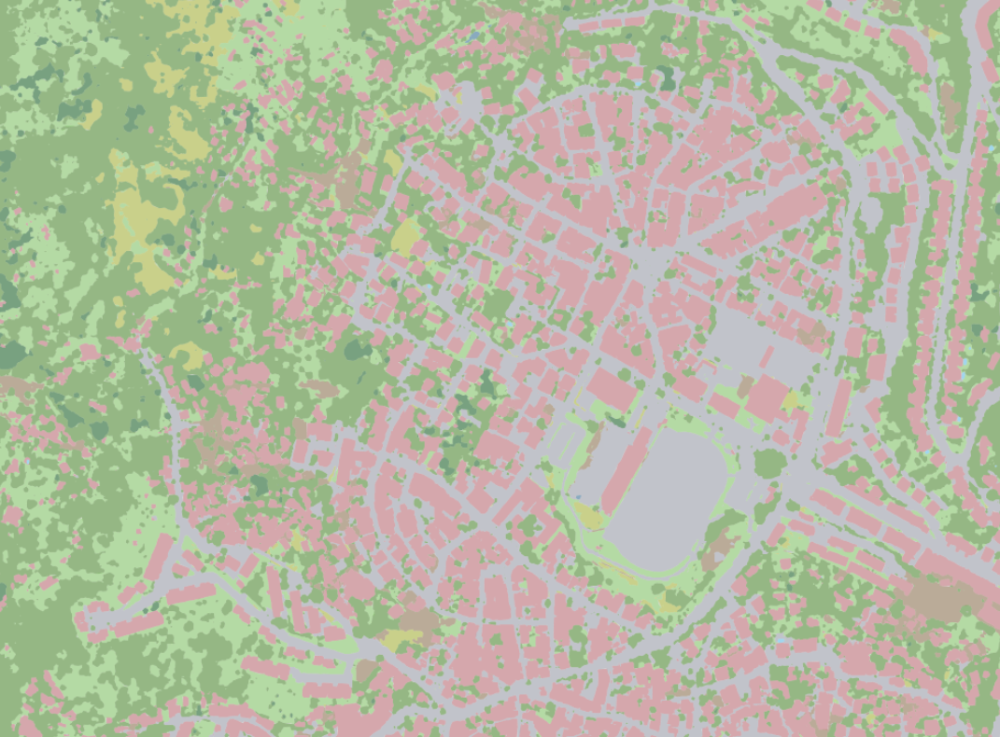
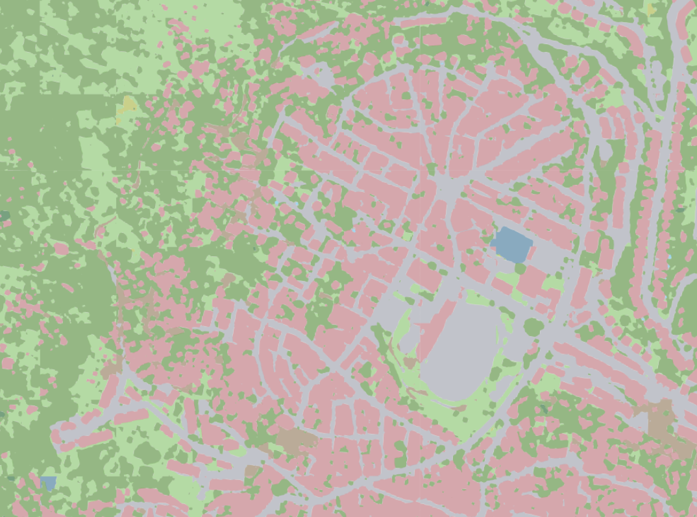

Utilisation des images satellites pour améliorer le repérage des logements à Mayotte
Maëlys Bernard, Raya Berova, Thomas Faria (Insee)
25 novembre 2025
Plan
1️⃣ Introduction
2️⃣ Méthodologie
3️⃣ Données
4️⃣ Résultats
5️⃣ De l’expérimentation à la production ?
6️⃣ Cas d’usage
7️⃣ Discussion
1️⃣ Introduction
Contexte
- Mission principale de l’Insee → le recensement de la population :
- Communes ≥ 10 000 hab : 8% /an
- Communes < 10 000 hab : 100% /5 ans
- Information du nombre de logements ?
Répertoire des Immeubles Localisés
- Le RIL :
- Inventaire du bâti
- Communes de +10 000 habitants
- Permis de construire et informations locales
- Bases de sondage des enquêtes de recensement
La qualité du RIL est bonne en France hexagonale ✅… mais loin d’être fiable dans les DROM âš ï¸
→ Autre méthode : découpage en îlots
Recensement dans les territoires d’outre mer
Contexte critique : Mayotte et Guyane
Pour compléter le RIL dans les DROM : enquête cartographique → très lourde
L’imagerie satellitaire pour optimiser le processus du recensement dans les DROM ? 🛰️
Nos cas d’usage
- Identifier les zones avec une forte densité de bâti 🏘️
- Détecter les évolutions du bâti de façon automatique
- Aider l’estimation de la population dans les DROM 👥
- Répondre à une urgence 🚨 : cyclone “Chido†à Mayotte
Plan
1️⃣ Introduction
2️⃣ Méthodologie
3️⃣ Données
4️⃣ Résultats
5️⃣ De l’expérimentation à la production ?
6️⃣ Cas d’usage
7️⃣ Discussion
2️⃣ Méthodologie
Segmentation sémantique
- Vision par ordinateur
- Classer chaque pixel d’une image
- Pour nos besoins : connaître les pixels de catégorie “bâtie”

Entraîner un modèle de segmentation
- Il faut :
- Une collection d’images satellites 🛰️
- Des annotations 📍
- Le modèle apprend à reproduire les annotations des images pour généraliser sur de nouvelles images
De la segmentation à la détection de changements

Modèle utilisé
- Architecture du modèle ğŸ§
- SegFormer : un modèle léger et performant
- Transformers : mécanismes d’attention pour prendre en compte le contexte local et global
- Décodeur : Multi Layer Perceptron
- Adapté pour nos données satellites
Évaluation
Pour évaluer les performances du modèle entraîné :IOU = Intersection Over Union
Plan
1️⃣ Introduction
2️⃣ Méthodologie
3️⃣ Données
4️⃣ Résultats
5️⃣ De l’expérimentation à la production ?
6️⃣ Cas d’usage
7️⃣ Discussion
3️⃣ Données
Pléiades vs Sentinel-2 🛰️
Pléiades :
- 3 bandes (RGB)
- Résolution 0.5m
- Archives gratuites
- Acquisition sur-demande payante

Mamoudzou, Mayotte 2024
Sentinel2 :
- 13 bandes
- Résolution 10m, 20m ou 60m (en fonction de la bande)
- Acquisition tous les 5j
- Gratuit
Annotations : COSIA
- Projet Cosia par IGN 👏
- Utilisé pour annoter nos données d’entraînement

Pleiades © CNES_2023, Distribution AIRBUS DS

Couverture du sol COSIA 2023

Légende COSIA
Plan
1️⃣ Introduction
2️⃣ Méthodologie
3️⃣ Données
4️⃣ Résultats
5️⃣ De l’expérimentation à la production ?
6️⃣ Cas d’usage
7️⃣ Discussion
4️⃣ Résultats
Zone de test à Mayotte
Pleiades © CNES_2023, Distribution AIRBUS DS
Couverture du sol COSIA 2023

Prédictions 2023
Légende COSIA
| Train | Test | |
|---|---|---|
| IOU moyenne ∀classe | 0.81 | 0.78 |
| IOU “bâtiment†| 0.84 | 0.76 |
Dashboard Interactive 🚀
👉 Application interactive: Cliquez ici
Plan
1️⃣ Introduction
2️⃣ Méthodologie
3️⃣ Données
4️⃣ Résultats
5️⃣ De l’expérimentation à la production ?
6️⃣ Cas d’usage
7️⃣ Discussion
5️⃣ De l’expérimentation à la production ?
Pipeline globale 🛠️
Application Architecture 🧩

Plan
1️⃣ Introduction
2️⃣ Méthodologie
3️⃣ Données
4️⃣ Résultats
5️⃣ De l’expérimentation à la production ?
6️⃣ Cas d’usage
7️⃣ Discussion
6️⃣ Cas d’usage
Cas d’usage : Le recensement à Mayotte
- Depuis 2021 : recensement avec fonctionnement quinquennal
- territoire divisé en îlots
- ilôts repartis dans 5 groupes de rotation
Contrôle de la couverture de l’enquête cartographique
Enquête cartographique → alimente le RIL → constitue la base de sondage des logements en dur des communes ≥ 10 000 hab
Sous-estimation du nb logements dans l’enquête carto → populations et logements déduit sous-estimé
→ Contrôle qualité de l’enquête cartographique important : utilisation des données satellites
Contrôle de la couverture de l’enquête cartographique
Contrôle de la couverture de l’enquête cartographique
💡 Objectif : identifier les îlots avec une sous-couverture potentielle
📈 Données utilisées :
| 🟠Évolutions comparées | Surface bâtie (prédite) | Nombre de logements |
| ⏱️ Temporalité | entre 2017 et 2021/2022 | |
| 📂 Données utilisées | données satellites (Surface bâtie) | RP 2017, enquêtes cartographique 2021 et 2022 (Nombre de logements) |
2 évolutions comparées :
- surface bâtie prédites entre 2017 et 2021/2022
- données satellites
- nombre de logements entre le RP 2017 et les enquêtes cartographiques 2021/2022
- collecte 2017, enquête cartographique 2021, 2022
Identification des îlots avec une sous-couverture potentielle
Construction d’un score
On s’intéresse uniquement aux îlots pour lesquels l’évolution du bâti issue des données satellites est plus importante que l’évolution issue de l’enquête cartographique
Le \(score\) est calculé sur 2 sous ensemble : - ensemble des logements - uniquement les logements en dur
\(score=score_{évolution} + score_{sens} + score_{distance}\)
⚙️ Définition des composantes
✅ \(Score_{évolution}\) = 1 si évolution nb_log recensement < évoltuion bâti prédit, sinon 0 ✅ \(score_{sens}\) = 1 si évolution nb_log recensement opposé évoltuion bâti prédit, sinon 0 ✅ \(score_{distance}\) selon la distribution :
| Valeur observée | \(score_{distance}\) |
|---|---|
| < Q₁ | 0 |
| Q₠≤ valeur < Médiane | 1 |
| Médiane ≤ valeur < Q₃ | 2 |
| ≥ Q₃ | 3 |
Définition des ordres de priorité
| Ordre de priorité | Score (ensemble des logements – logements durs) |
|---|---|
| 1 | 5-5 |
| 2 | 4-5 ou 5-4 |
| 3 | 4-4 |
| 4 | 3-5 ou 5-3 |
| 5 | 3-4 ou 4-3 |
| 6 | 3-3 |
| 7 | 2-5 ou 5-2 |
| 8 | 2-4 ou 4-2 |
-> cartographie complémentaire sur les îlots avec un ordre de priorité 1 à 8
Exemple d’îlot
- • : enquête cartographique complémentaire
- • : enquête cartographique initiale
Exemple d’un examen en 2024 d’un îlot de 2021, Bandrele
- : nouveaux logements qui n’existaient pas lors de l’enquête cartographique initiale
- : logements possiblement omis lors de l’enquête cartographique initiale
Bilan
Plan
1️⃣ Introduction
2️⃣ Méthodologie
3️⃣ Données
4️⃣ Résultats
5️⃣ De l’expérimentation à la production ?
6️⃣ Cas d’usage
7️⃣ Discussion
7️⃣ Discussion
Défis & Perspectives
- Coûts de maintenance élevés en raison de la complexité technique 💸
- Besoin de compétences spécialisées 🧑‍💻
- Environnement technique complexe dû à :
- Volumes de données importants 🗃️
- Forts besoins en calcul (GPU) ⚡
- Volumes de données importants 🗃️
- Résultats initiaux prometteurs pour accompagner les enquêtes cartographiques